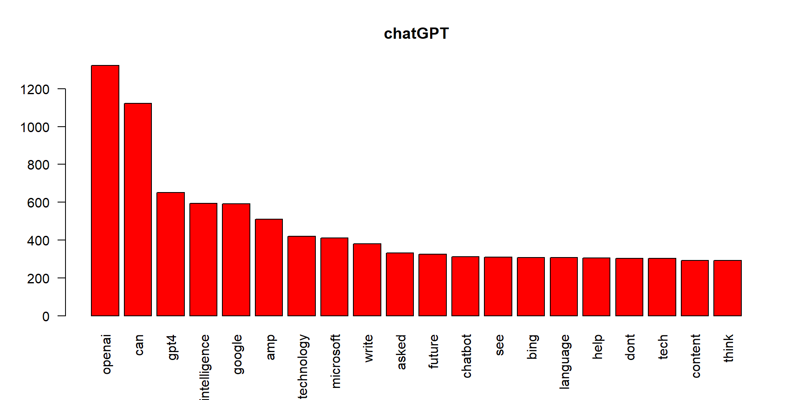
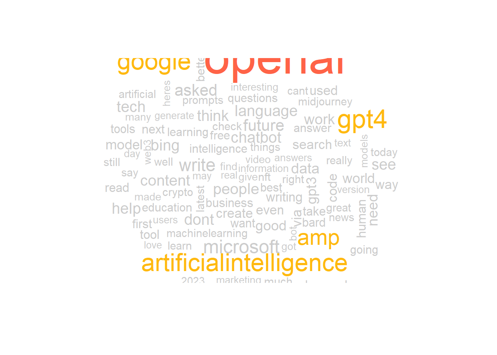
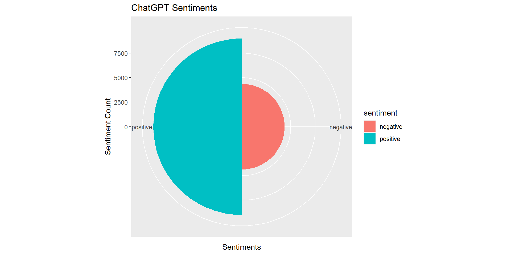

knitr::opts_chunk$set(echo = TRUE)ChatGPT is a powerful LLM created by Open AI which has been a recently gained a lot of popularity due to its ability to perform a wide variety of tasks well and gained a lot of attention on social media platforms where people have been discussing about it.Let’s explore what Twitterati think about this phenomenon.
The data is from Kaggle, https://www.kaggle.com/datasets/khalidryder777/500k-chatgpt-tweets-jan-mar-2023/data
Following is the list of packages that are required for analysis of the Twitter data.
library(twitteR)
library(dplyr)
library(ggplot2)
library(tm)
library(wordcloud)
library(tidytext)
library(tidyverse)
library(sqldf)
library(ggplot2)
library(ggthemes)
library(data.table)
library(gridExtra)# for now, we will just concentrate on the text of tweets
chatgpt<-chatgpt$content
chatgpt<-as.character(chatgpt)
# Text transformations- removing white spaces, common stop words,punctuation
chatgpt<-stripWhitespace(chatgpt)
## this will remove all other characters except $ sign
chatgpt<-gsub("[^[:alnum:][:space:]$]", "", chatgpt)
chatgpt<-tolower(chatgpt)
chatgpt<-removeWords(chatgpt, c(stopwords("english"),'ampamp','retweet','just','comment','will','chatgpt','gpt','chat','like','ai','use', 'new', 'now', 'get', 'using', 'one', 'time','ask', 'know','make', 'also'))
# Converting tweets to vector source
chatgptTweets <- VectorSource(chatgpt)
# Converting verctor source to Volatile Corpus, which is a nested list ($content and $meta). This helps extracting individual tweets
chatgptTweets<-VCorpus(chatgptTweets)
# Creating document term matrix- This matrix will contain the count of each word used in all of the tweets.
chatgpt_dtm<-DocumentTermMatrix(chatgptTweets)
# Converting DTM to matrix form for the calculations
chatgpt_m<-as.matrix(chatgpt_dtm)
## getting the word frequencies
chatgpt_wf<-colSums(chatgpt_m)
chatgpt_wf<-sort(chatgpt_wf,decreasing = TRUE)We have done most of the transformation required for the analysis. Now, we plot the most frequent words for each of the Cryto Currency related tweets.
#Plotting most frequent words
barplot(chatgpt_wf[1:20],col='red',las=2,main = 'chatGPT')
Now, we create the word clouds of Bitcoin, Ripple and Ethereum Repsectively.
wordcloud(names(chatgpt_wf),chatgpt_wf,colors = c("grey80", "darkgoldenrod1", "tomato"),max.words = 100)#Plotting most frequent words
barplot(chatgpt_wf[1:20],col='red',las=2,main = 'chatgpt')wordcloud(names(chatgpt_wf),chatgpt_wf,colors = c("grey80", "darkgoldenrod1", "tomato"),max.words = 100)
Now, we need to analyse the sentiments about ChatGPT as reflected in the tweets. For the purpose of sentiment analysis, we use Sentiments database that comes with tidytext package. The database contains most frequently used words and the sentiments related with those words. For the purpose of analysis, we compare the tweets with Sentiments database words and count the frequency of different sentiments.
pie <- ggplot(data =filter(na.omit(chatgptSentiments)), aes(x= reorder(sentiment,count), y =count, fill=sentiment)) +
geom_bar(stat="identity", width=1) +
theme(aspect.ratio = 1) +
labs(title='ChatGPT Sentiments',x='Sentiments',y='Sentiment Count')
pie + coord_flip()pie + coord_polar()
In this section, we analyse influences- The people who tweet actively and are followed by many other people. We try to find out top 10 tweeters for each of the Chatgpt and the number of Tweets, Re tweets, Likes etc. In Twitter world, this is called Impressions. We will try to find out users with highest impressions.